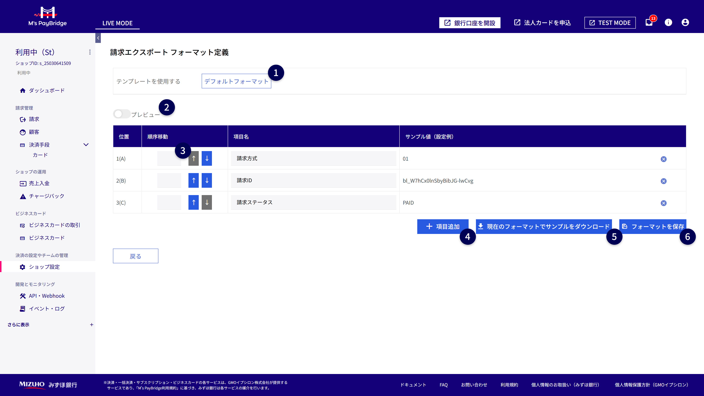
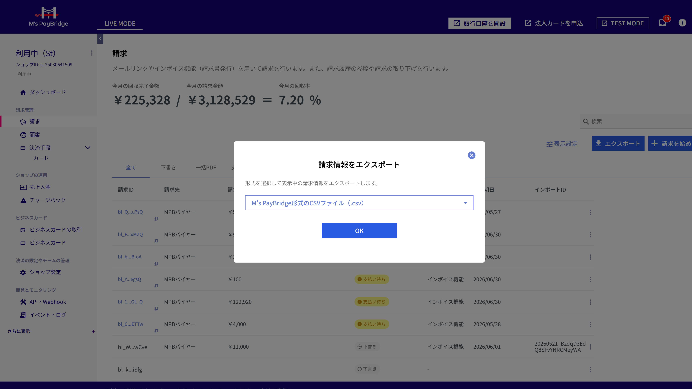

将账单信息导出为 CSV
可以将通过 M's PayBridge 应收账款管理功能出具的账单信息，按自定义格式导出为 CSV 文件。
设置导出格式
可从［商户设置］＞［应收账款管理设置］＞［账单信息导出格式设置］配置 CSV 文件的导出格式。

1. 默认格式
点击“默认格式”后，预览将采用 M's PayBridge 提供的标准账单信息导出格式。
2. 预览
点击预览前，CSV 各列纵向排列。点击预览后，各列按实际导出 CSV 的格式横向显示。
3. 调整顺序
在各列的“调整顺序”单元格内输入目标列号并按 Enter，或点击“↑”“↓”按钮，即可调整导出的 CSV 列顺序。
4. 添加和删除项目
点击表格右下方的“添加项目”并选择项目名称，可在导出格式中增加新列。点击某列最右侧的“×”按钮，可从导出格式中删除该列。
5. 按当前格式下载样本
点击“按当前格式下载样本”，可按当前预览格式下载样本 CSV 文件。需要在第 6 步保存格式前确认导出文件的格式时，可使用此功能。
6. 保存格式
点击“保存格式”可保存当前预览的格式。已保存的格式将在导出账单信息时应用。
导出账单信息

在账单列表点击“导出”，在确认对话框选择“M's PayBridge 格式的 CSV 文件”并点击“OK”。当前显示的账单信息将按已保存的账单信息导出格式下载为 CSV 文件。
[!]
尚未设置账单信息导出格式时会报错。请在导出前先保存格式。
可导出的列
可导出的列以获取账单 API 的输出为准。格式中所有项目均为可选。
| No. | 列名 | 概要 |
|---|---|---|
| 1 | 收费方式請求方式 | 01：账单／ 02：重定向式支付／ 03：支付（账单信息草稿） |
| 2 | 账单 ID請求ID | — |
| 3 | 账单状态請求ステータス | DRAFT：草稿／ AWAITING_CUSTOMER_PAYMENT：等待支付／ PAID：支付完成／ CANCELED：已取消 |
| 4 | 客户 ID顧客ID | — |
| 5 | 敬称 | — |
| 6 | 账单收件方_收件人請求先_宛名 | — |
| 7 | 账单收件方_电子邮件地址請求先_メアド | — |
| 8 | 账单收件方_地址_国家代码請求先_住所_国コード | — |
| 9 | 账单收件方_地址_都道府县代码請求先_住所_都道府県コード | — |
| 10 | 账单收件方_地址_市区町村請求先_住所_市区町村 | — |
| 11 | 账单收件方_地址_町名及门牌号請求先_住所_町名・番地 | — |
| 12 | 账单收件方_地址_楼名及房间号請求先_住所_建物名・部屋番号 | — |
| 13 | 账单收件方_地址_其他請求先_住所_その他 | — |
| 14 | 账单收件方_地址_邮政编码請求先_住所_郵便番号 | — |
| 15 | 账单收件方_收件人_覆盖請求先_宛名_上書き | — |
| 16 | 账单收件方_电子邮件地址_覆盖請求先_メアド_上書き | — |
| 17 | 账单收件方_国家代码_覆盖請求先_国コード_上書き | — |
| 18 | 账单收件方_地址_都道府县代码_覆盖請求先_住所_都道府県コード_上書き | — |
| 19 | 账单收件方_地址_市区町村_覆盖請求先_住所_市区町村_上書き | — |
| 20 | 账单收件方_地址_町名及门牌号_覆盖請求先_住所_町名・番地_上書き | — |
| 21 | 账单收件方_地址_楼名及房间号_覆盖請求先_住所_建物名・部屋番号_上書き | — |
| 22 | 账单收件方_地址_其他_覆盖請求先_住所_その他_上書き | — |
| 23 | 账单收件方_地址_邮政编码_覆盖請求先_住所_郵便番号_上書き | — |
| 24 | 开具方_经营者名称発行元_事業者名 | — |
| 25 | 开具方_合格账单开具经营者登记编号発行元_適格請求書発行事業者登録番号 | — |
| 26 | 开具方_电子邮件地址発行元_メールアドレス | — |
| 27 | 开具方_地址_都道府县代码発行元_住所_都道府県コード | — |
| 28 | 开具方_地址_市区町村発行元_住所_市区町村 | — |
| 29 | 开具方_地址_町名及门牌号発行元_住所_町名番地 | — |
| 30 | 开具方_地址_楼名及房间号発行元_住所_建物名部屋番号 | — |
| 31 | 开具方_地址_其他発行元_住所_その他 | — |
| 32 | 开具方_地址_邮政编码発行元_住所_郵便番号 | — |
| 33 | 开具方_电话号码発行元_電話番号 | — |
| 34 | 开具方_电子邮件地址_覆盖発行元_メールアドレス_上書き | — |
| 35 | 开具方_地址_都道府县代码_覆盖発行元_住所_都道府県コード_上書き | — |
| 36 | 开具方_地址_市区町村_覆盖発行元_住所_市区町村_上書き | — |
| 37 | 开具方_地址_町名及门牌号_覆盖発行元_住所_町名番地_上書き | — |
| 38 | 开具方_地址_楼名及房间号_覆盖発行元_住所_建物名部屋番号_上書き | — |
| 39 | 开具方_地址_其他_覆盖発行元_住所_その他_上書き | — |
| 40 | 开具方_地址_邮政编码_覆盖発行元_住所_郵便番号_上書き | — |
| 41 | 开具方_电话号码_覆盖発行元_電話番号_上書き | — |
| 42 | 签发日期発行年月日 | yyyy/MM/dd |
| 43 | 是否按含税显示内税表記有無 | true：按含税显示／ false：按未税显示 |
| 44 | 付款截止日期支払期日 | — |
| 45 | 备注備考 | — |
| 46 | 商户自定义输入 1（账单）加盟店自由入力1（請求） | — |
| 47 | 商户自定义输入 2（账单）加盟店自由入力2（請求） | — |
| 48 | 商户自定义输入 3（账单）加盟店自由入力3（請求） | — |
| 49 | 无法收款标志回収不能フラグ | — |
| 50 | M's PayBridge 以外付款标志M's PayBridge外支払フラグ | — |
| 51 | 付款完成日期支払完了日 | yyyy/MM/dd |
| 52 | 金额合计合計金額 | 若在指定账户明细录入了入账金额，该金额将计入此项。 |
| 53 | 账单金额合计合計請求金額 | — |
| 54 | 实际使用的支付类型利用された決済種別 | — |
| 55 | 账单页面 URL請求ページURL | — |
| 56 | 账单 PDF 下载 URL請求書PDFダウンロードURL | — |
| 57 | 收据 PDF 下载 URL領収書PDFダウンロードURL | — |
| 58 | 账单编号請求番号 | — |
| 59 | 卡片_处理类型カード_処理区分 | — |
| 60 | 卡片_3DS 使用类型カード_3DS利用種別 | 0：不执行／ 2：执行（使用 3DS2.0） |
| 61 | 卡片_3D Secure 显示的商户名称カード_3Dセキュア表示店舗名 | — |
| 62 | 卡片_不支持 3DS2 时的设置カード_3DS2非対応時設定 | 2：按错误结束处理／ 3：执行正常授权 |
| 63 | 卡片_账户最后更新日期カード_アカウント最終更新日 | — |
| 64 | 卡片_账户开立日期カード_アカウント開設日 | — |
| 65 | 卡片_账户密码变更日期カード_アカウントパスワード変更日 | — |
| 66 | 卡片_购买账户数カード_購入アカウント数 | — |
| 67 | 卡片_支付账户使用时长カード_支払いアカウント年齢 | — |
| 68 | 卡片_每天的提供尝试次数カード_1日あたりの提供試行回数 | — |
| 69 | 卡片_配送地址使用日期カード_配送先住所使用日 | — |
| 70 | 卡片_配送收件人姓名指示值カード_配送先名インジケータ | 01：卡片客户姓名与配送收件人姓名一致／ 02：不一致 |
| 71 | 卡片_可疑账户活动カード_不審なアカウント活動 | 01：未发现可疑活动／ 02：发现可疑活动 |
| 72 | 卡片_每天的交易活动カード_1日あたりの取引活動 | — |
| 73 | 卡片_每年的交易活动カード_1年あたりの取引活動 | — |
| 74 | 卡片_认证数据カード_認証データ | — |
| 75 | 卡片_认证方式カード_認証方法 | 01：未认证（访客）／ 02：商户认证信息／ 03: SSO / 04：发卡机构认证信息／ 05：第三方认证／ 06：FIDO 认证 |
| 76 | 卡片_认证时间戳カード_認証タイムスタンプ | — |
| 77 | 卡片_地址是否一致カード_住所一致 | Y：一致／ N：不一致 |
| 78 | 卡片_账单地址市区町村カード_請求先市区町村 | — |
| 79 | 卡片_账单地址国家カード_請求先国 | — |
| 80 | 卡片_账单地址 1カード_請求先住所1 | — |
| 81 | 卡片_账单地址 2カード_請求先住所2 | — |
| 82 | 卡片_账单地址 3カード_請求先住所3 | — |
| 83 | 卡片_账单地址邮政编码カード_請求先郵便番号 | — |
| 84 | 卡片_账单地址都道府县代码カード_請求先都道府県コード | — |
| 85 | 卡片_电子邮件地址カード_メールアドレス | — |
| 86 | 卡片_住宅电话国家代码カード_自宅電話国番号 | — |
| 87 | 卡片_住宅电话号码カード_自宅電話番号 | — |
| 88 | 卡片_手机国家代码カード_携帯電話国番号 | — |
| 89 | 卡片_手机号码カード_携帯電話番号 | — |
| 90 | 卡片_工作电话国家代码カード_勤務先電話国番号 | — |
| 91 | 卡片_工作电话号码カード_勤務先電話番号 | — |
| 92 | 卡片_配送地址市区町村カード_配送先市区町村 | — |
| 93 | 卡片_配送地址国家カード_配送先国 | — |
| 94 | 卡片_配送地址 1カード_配送先住所1 | — |
| 95 | 卡片_配送地址 2カード_配送先住所2 | — |
| 96 | 卡片_配送地址 3カード_配送先住所3 | — |
| 97 | 卡片_配送地址邮政编码カード_配送先郵便番号 | — |
| 98 | 卡片_配送地址都道府县代码カード_配送先都道府県コード | — |
| 99 | 卡片_配送电子邮件地址カード_配送先メールアドレス | — |
| 100 | 卡片_配送时间范围カード_配送時間枠 | 01：电子交付／ 02：当日发货／ 03：次日发货／ 04：两天及以后发货 |
| 101 | 卡片_礼品卡金额カード_ギフトカード金額 | — |
| 102 | 卡片_礼品卡数量カード_ギフトカード枚数 | — |
| 103 | 卡片_礼品卡币种カード_ギフトカード通貨 | — |
| 104 | 卡片_预购日期カード_予約注文日 | — |
| 105 | 卡片_预购指示值カード_予約注文インジケータ | 01：已发售商品／ 02：预售商品 |
| 106 | 卡片_重新下单指示值カード_再注文インジケータ | 01：首次下单／ 02：重新下单 |
| 107 | 卡片_配送指示值カード_配送インジケータ | 01：配送至账单地址／ 02：配送至已核实地址／ 03：配送至其他地址／ 04：到店自提／ 05：数字商品／ 06：无需配送／ 07：其他 |
| 108 | 卡片_定期付款有效期カード_定期支払い有効期限 | — |
| 109 | 卡片_定期付款频率カード_定期支払い頻度 | — |
| 110 | 要沿用其虚拟账户的账单 IDバーチャル口座を引き継ぐ請求ID | — |
| 111 | 虚拟账户_虚拟账户 IDバーチャル口座_バーチャル口座ID | — |
| 112 | 虚拟账户_支行名称バーチャル口座_支店名 | — |
| 113 | 虚拟账户_支行代码バーチャル口座_支店コード | — |
| 114 | 虚拟账户_账号バーチャル口座_口座番号 | — |
| 115 | 虚拟账户_账户名义バーチャル口座_口座名義 | — |
| 116 | 账单邮件发送标志請求書メール送信フラグ | 0：不发送／ 1：发送 |
| 117 | 收据邮件发送标志領収書メール送信フラグ | 0：不发送／ 1：发送 |
| 118 | 差额账单邮件发送标志差額請求メール送信フラグ | 0：不发送／ 1：发送 |
| 119 | 链接_重定向式支付 URLリンク_リダイレクト型決済URL | — |
| 120 | 链接_成功时的重定向 URLリンク_成功時リダイレクトURL | — |
| 121 | 链接_取消时的重定向 URLリンク_キャンセル時リダイレクトURL | — |
| 122 | 链接_重定向式支付 URL 有效期リンク_リダイレクト型決済URL 有効期限 | yyyy/MM/dd HH:mm:ss.SSS |
| 123 | 链接_商户／服务名称リンク_ショップ／サービス名 | — |
| 124 | 链接_支付邮件收件地址リンク_決済メール 送信先メールアドレス | — |
| 125 | 链接_购买邮件中的购买者姓名リンク_購入メール 購入者の名前 | — |
| 126 | 支付邮件发送标志決済メール 送信フラグ | 0：不发送／ 1：发送 |
| 127 | 完成邮件发送标志完了メール 送信フラグ | 0：不发送／ 1：发送 |
| 128 | 邮件模板 IDメールテンプレートID | — |
| 129 | 使用金额利用金額 | — |
| 130 | 税费和运费税送料 | — |
| 131 | 卡片_交易类型カード_取引種別 | — |
| 132 | 卡片_是否执行 3D Secure 认证カード_3Dセキュア認証有無 | 0：不执行／ 2：执行（使用 3DS2.0） |
| 133 | 卡片_3D Secure 认证参数中的特约商户名称カード_3Dセキュア認証パラメータ 加盟店名 | — |
| 134 | 卡片_不支持 3D Secure 2.0 时的行为设置カード_3Dセキュア2.0非対応時の挙動設定 | 2：按错误结束处理／ 3：执行正常授权 |
| 135 | 卡片_商品代码カード_商品コード | — |
| 136 | 便利店支付_付款页面 URLコンビニ決済_支払い画面URL | — |
| 137 | 便利店支付_付款期限天数コンビニ決済_支払期限日数 | — |
| 138 | 便利店支付_付款页面通知邮件发送标志コンビニ決済_支払い画面案内メール送信フラグ | 0：不发送／ 1：发送 |
| 139 | Paypay 支付_处理代码Paypay決済_ジョブコード | — |
| 140 | Paypay 支付_订单内容说明Paypay決済_注文内容の説明 | — |
| 141 | 虚拟账户_要沿用的账单 IDバーチャル口座_引き継ぐ請求ID | — |
| 142 | 虚拟账户_虚拟账户_付款页面 URLバーチャル口座_バーチャル口座_支払い画面URL | — |
| 143 | 虚拟账户_付款期限天数バーチャル口座_支払期限日数 | — |
| 144 | 虚拟账户_付款页面通知邮件发送标志バーチャル口座_支払い画面案内メール送信フラグ | 0：不发送／ 1：发送 |
| 145 | 指定账户_银行代码 1指定口座_銀行コード1 | 原样输出指定账户的登记值 |
| 146 | 指定账户_银行名称 1指定口座_銀行名1 | 原样输出指定账户的登记值 |
| 147 | 指定账户_支行代码 1指定口座_支店コード1 | 原样输出指定账户的登记值 |
| 148 | 指定账户_支行名称 1指定口座_支店名1 | 原样输出指定账户的登记值 |
| 149 | 指定账户_账号 1指定口座_口座番号1 | 原样输出指定账户的登记值 |
| 150 | 指定账户_账户名义 1指定口座_口座名義1 | 原样输出指定账户的登记值 |
| 151 | 指定账户_存款类型 1指定口座_預金種別1 | 1：普通存款／ 2：往来存款 |
| 152 | 指定账户_银行代码 2指定口座_銀行コード2 | 原样输出指定账户的登记值 |
| 153 | 指定账户_银行名称 2指定口座_銀行名2 | 原样输出指定账户的登记值 |
| 154 | 指定账户_支行代码 2指定口座_支店コード2 | 原样输出指定账户的登记值 |
| 155 | 指定账户_支行名称 2指定口座_支店名2 | 原样输出指定账户的登记值 |
| 156 | 指定账户_账号 2指定口座_口座番号2 | 原样输出指定账户的登记值 |
| 157 | 指定账户_账户名义 2指定口座_口座名義2 | 原样输出指定账户的登记值 |
| 158 | 指定账户_存款类型 2指定口座_預金種別2 | 1：普通存款／ 2：往来存款 |
| 159 | 指定账户_银行代码 3指定口座_銀行コード3 | 原样输出指定账户的登记值 |
| 160 | 指定账户_银行名称 3指定口座_銀行名3 | 原样输出指定账户的登记值 |
| 161 | 指定账户_支行代码 3指定口座_支店コード3 | 原样输出指定账户的登记值 |
| 162 | 指定账户_支行名称 3指定口座_支店名3 | 原样输出指定账户的登记值 |
| 163 | 指定账户_账号 3指定口座_口座番号3 | 原样输出指定账户的登记值 |
| 164 | 指定账户_账户名义 3指定口座_口座名義3 | 原样输出指定账户的登记值 |
| 165 | 指定账户_存款类型 3指定口座_預金種別3 | 1：普通存款／ 2：往来存款 |
| 166 | 银行账户自动扣款_扣款结果代码口振_振替結果コード | 从支付信息输出 |
| 167 | 银行账户自动扣款_指定扣款日期口振_振替指定日 | 银行账户自动扣款中登记的值 |
| 168 | 银行账户自动扣款_账单显示内容口振_ご利用明細表示内容 | 银行账户自动扣款中登记的值 |
| 169 | 银行账户自动扣款_扣款失败邮件标志口振_口座振替失敗メールフラグ | 银行账户自动扣款中登记的值 |
| 170 | 银行账户自动扣款_银行代码口振_銀行コード | 银行账户自动扣款中登记的值 |
| 171 | 银行账户自动扣款_银行名称口振_銀行名 | 银行账户自动扣款中登记的值 |
| 172 | 银行账户自动扣款_支行代码口振_支店コード | 银行账户自动扣款中登记的值 |
| 173 | 银行账户自动扣款_支行名称口振_支店名 | 银行账户自动扣款中登记的值 |
| 174 | 银行账户自动扣款_存款类型口振_預金種別 | 银行账户自动扣款中登记的值 |
| 175 | 支付路径決済ルート | 银行账户自动扣款中登记的值 |
| 176 | 支付信息_支付金额決済情報_決済金額 | 从支付信息输出。指定账户方式下，仅在收到全额或超额款项并标记完成时输出。 |
| 177 | 支付信息_支付日期決済情報_決済日付 | 从支付信息输出。指定账户方式下，仅在收到全额或超额款项并标记完成时输出。 |
| 178 | 支付信息_商户自定义项目 1決済情報_加盟店自由項目1 | 从支付信息输出。指定账户方式下，仅在收到全额或超额款项并标记完成时输出。 |
| 179 | 支付信息_商户自定义项目 2決済情報_加盟店自由項目2 | 从支付信息输出。指定账户方式下，仅在收到全额或超额款项并标记完成时输出。 |
| 180 | 支付信息_商户自定义项目 3決済情報_加盟店自由項目3 | 从支付信息输出。指定账户方式下，仅在收到全额或超额款项并标记完成时输出。 |
| 181 | 产生的差额発生差額 | 仅虚拟账户和指定账户会产生差额。只能输出导出时的差额。指定账户方式下如难以收回款项，输出 No.53 − No.52 的金额。 |
| 182 | 空白ブランク | — |
| 183 | 产生的总金额合計発生金額 | — |